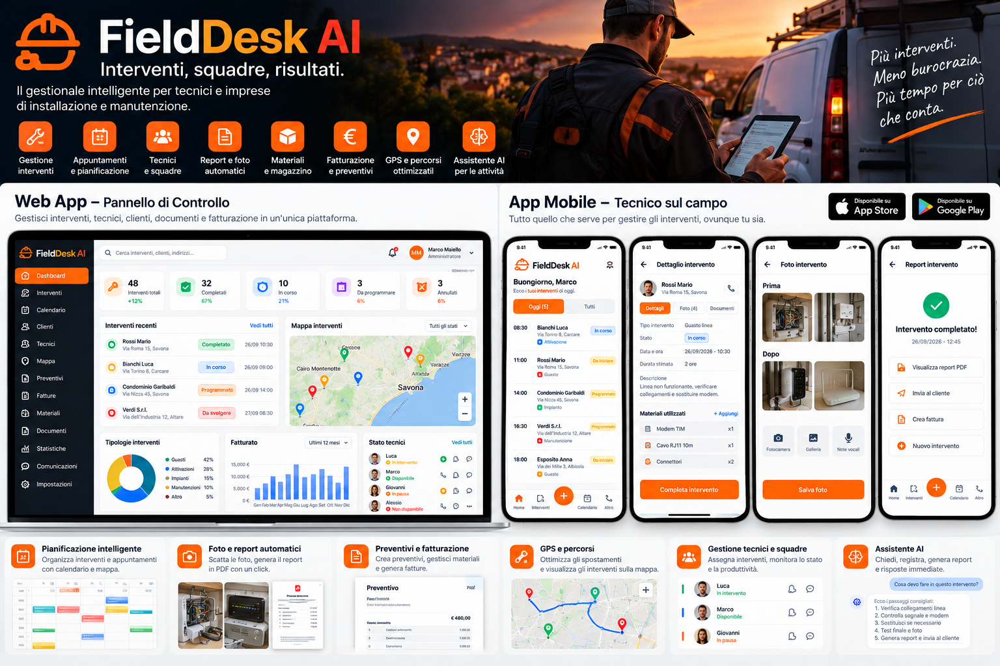

Pianificazione interventi
Agenda e calendario per organizzare appuntamenti e assegnazioni.
FIELD DESK AI · GESTIONALE PER IMPRESE TECNICHE
Interventi, tecnici, appuntamenti, clienti e rapportini: FieldDesk AI nasce per riunire le attività operative in un solo ambiente, dall'ufficio al cantiere.
Software in fase di sviluppo · Demo su richiesta · Disponibilità commerciale da confermare.

MENO DISPERSIONE · PIÙ ORGANIZZAZIONE
Dalla chiamata del cliente al rapportino firmato: le funzioni sulle quali stiamo costruendo FieldDesk AI.
Agenda e calendario per organizzare appuntamenti e assegnazioni.
Gestione delle attività operative e aggiornamento degli stati di avanzamento.
Note, materiali, fotografie e firma del cliente nel flusso d'intervento.
Informazioni, interventi e riepiloghi associati ai clienti.
PENSATO PER CHI LAVORA SUL TERRITORIO
FieldDesk AI è progettato per aziende con tecnici e attività da coordinare. Lo valutiamo insieme sulle esigenze reali della tua attività.
CYBERNETLAB · SAVONA
Raccontaci come organizzi gli interventi oggi. Ti ricontatteremo per valutare una breve dimostrazione, senza impegno.
La demo non implica disponibilità immediata del software.